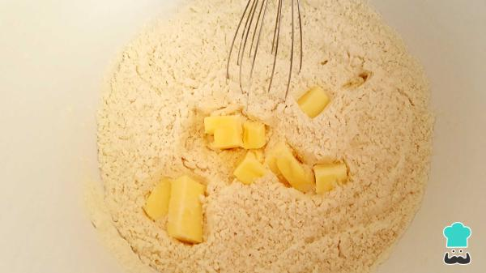

Pastelitos Argentinos!
Aprende a preparar uno de los postres más populares de Argentina, unos ricos y crujientes pastelitos argentinos, también denominados pastelitos criollos. Estos dulces están elaborados con cuadros de masa de hojaldre y están rellenos con dulce de membrillo. Se cocinan fritos en aceite, se bañan en almíbar y se decoran con grageas de colores. Este rico postre suele prepararse principalmente en temporada de festividades patrias de Argentina, pero no es exclusivo, ya que se puede disfrutar prácticamente durante todo el año.
No te lo pienses más y aprende cómo hacer pastelitos argentinos de membrillo. Sigue leyendo y no te pierdas los pasos que te mostramos en RecetasGratis. ¡A cocinar!
Ingredientes
- 500 gramos de harina 0000
- 200 gramos de mantequilla o manteca vegeta
- 250 mililitros de agua
- 1 pizca de sal
- 1 cucharadita de jugo de limón
- 50 gramos de fécula de maíz
- 300 gramos de dulce de membrillo
- 1 taza de aceite
- ½ taza de azúcar (100 gramos) /li>
- ½ taza de agua (120 mililitros)
- Granas de colores para decorar
INSTRUCCIONES
- Empieza la receta de pastelitos argentinos colocando en un bol la harina y la pizca de sal, mezcla con un tenedor o batidor globo.
- Agrega 100 g de mantequilla y mezcla para obtener una textura arenosa. Señalamos que puedes mezclar con la ayuda de una batidora o manualmente.

- Agrega poco a poco el agua y el jugo de limón. Cuando hayas agregado estos dos ingredientes, amasa hasta conseguir una textura más firme. Cuando tengas la textura deseada, envuelve en plástico y deja reposar a temperatura ambiente aproximadamente 30 minutos.
- Ahora prepara la masa hojaldre. Después del tiempo de reposo de la masa para pastelitos argentinos, estira con un rodillo de forma rectangular hasta conseguir un grosor de unos 2 o 3 mm, enseguida unta mantequilla suave, espolvorea un poco de fécula de maíz y dobla por la mitad.
- Vuelve a estirar ligeramente con el rodillo y repite el proceso de untar mantequilla y doblar en capas. Para última capa, espolvorea fécula de maíz y dobla por la mitad. En el refrigerador deja reposar 30 minutos aproximadamente.
- Cuando haya reposado la masa, estira con un rodillo y córtala en cuadros de aproximadamente 8x8cm.
- Coloca un trozo de dulce de membrillo en el centro del cuadro de la masa y humedece rodeando el dulce. Seguido, cierra con otro cuadro de masa de pastelitos presionando y doblando los bordes sin juntar las puntas.

- Calienta aceite en una sartén y fríe los pastelitos dulces de hojaldre. Con una cuchara agrega aceite de la sartén sobre el pastelito para que el hojaldre se abra. Señalamos que el aceite no debe estar muy caliente, sino el pastelito se dorará muy rápido y la masa no se cocinará bien. Señalamos que los pastelitos argentinos al horno están también deliciosos, escoge la opción que más te guste.
- Deja reposar sobre una rejilla o papel absorbente para retirar el exceso de aceite. ¡Ya casi están los pastelitos de membrillo!

- Te preguntas cómo hacer almíbar para pastelitos? Pues bien, para elaborar almíbar para pastelitos, primero en una olla calienta agua y azúcar hasta que comience a hervir, luego baña el pastelito y agrega opcionalmente grageas de colores. ¡Ya puedes disfrutar de estos pastelitos caseros! Cuéntanos en los comentarios qué te ha parecido esta receta.
Volver a la pagina principal